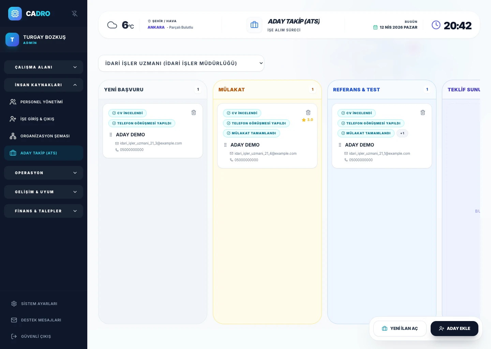

Kanban Candidate Board
Move candidates from New Application to Offer with drag and drop. Everyone on the team sees who is where in real time.

APPLICANT TRACKING SYSTEM (ATS)
Collect all applications on a single screen with CADRO ATS, streamline interview stages, and make your hiring process trackable across teams.

HOW IT WORKS
Define the position with department and title. Add it to your careers page in one click and manage active/inactive status anytime.
The moment a CV is uploaded, AI scores communication, technical ability, cultural fit, and motivation in 4 dimensions. A summary is generated instantly.
Interview → Test → Reference → Offer: move candidates with drag and drop, enrich each card with team notes and HR scorecard ratings.
Send a personalized PDF offer letter to the accepted candidate. One click converts them to an employee record; dossier and payroll flows begin.
Applications scattered across different channels, lost interview notes, and extended time-to-hire.
A centralized ATS that pools all candidates and offers a drag-and-drop pipeline with evaluation flow.
A more visible hiring process, faster decision-making, and stronger employer branding in candidate experience.
ATS MODULE
Move candidates from New Application to Offer with drag and drop. Everyone on the team sees who is where in real time.
The moment a CV is uploaded, AI kicks in: communication, technical ability, cultural fit, and motivation are auto-scored in 4 dimensions, with an overall summary generated instantly.
Interviewers record strengths, weaknesses, and an overall verdict for each candidate. Scoring covers communication, technical, culture, and motivation.
Generate a personalized PDF offer letter directly from the system. The template auto-fills with the job posting details — send it to the candidate in one click.
Keep the pipeline transparent with badges like “CV Reviewed”, “Phone Screen Done”, and “Interview Completed”. Team notes accumulate on the same card.
Create department-specific job postings and toggle them active or inactive. Applications from all channels land in a single pool.
HOW IT WORKS
Define the open position and publish it to your careers page in one click.
Applications from portals are collected automatically — no duplicate entries.
Interview → Test → Offer: drag and drop candidates through stages, keep team notes in one place.
One click turns an accepted candidate into an employee card; dossier and payroll flows begin.
OPERATIONAL CLARITY
New candidate intake, stage management, and team decision processes all progress within the same structure. This makes hiring not just faster but also more controlled.
Explore Digital Dossier Module →
INTERNAL LINKS
Move hired employees to document and leave processes faster.
Explore Dossier & Leave Module →Integrate newly hired employees into goal and development structures more easily.
Explore Performance Module →After operational onboarding, connect attendance, shift, and time management to a single screen.
Explore Attendance Module →FAQ
An ATS is software that digitizes the hiring process and manages applications in a single structure. It makes the candidate flow visible and reduces the operational burden on recruitment teams.
Candidates are tracked at specific stages, team notes are kept in one center, and it is clearly visible who is at which stage.
Yes. After hiring, employee data is positioned to be transferred to dossier and other HR processes in a more organized way.
It is suitable for companies that collect applications for multiple positions, want to make their interview flow visible, and aim to strengthen cross-team recruitment coordination.
When the hiring process is completed, candidate information can be transferred to relevant HR flows in a more controlled manner, and onboarding preparations can proceed within the same structure.
READY?
Manage applications, evaluations, and decision processes on a single platform with CADRO.